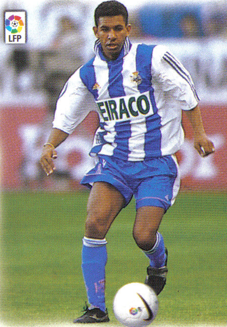

Djalminha

Biografía
Djalma Feitosa Dias, conocido futbolísticamente como Djalminha, es un ex-jugador brasileño de fútbol. Nació el 9 de diciembre de 1970 en la ciudad de Santos, en el estado de Sao Paulo en Brasil.
Es hijo de Djalma Dias, defensa brasileño de los años sesenta, participante de una de las mejores selecciones de todos los tiempos, el Brasil del 70. Cuando tenía 17 años, en 1987, Djalminha fue llamado para completar una selección brasileña de veteranos y ofreció todo un recital, eclipsando al mismísimo Pelé. El Flamengo se fijó y lo ficho para su equipo juvenil. Sus mejores cualidades eran el regate, pase y visión de juego. Era conocido como "O Dios".
Datos personales
- Nombre completo: Djalma Feitosa Dias
- Fecha de nacimiento: 9 de diciembre de 1970 (46 años)
- Lugar de nacimiento: Santos, Brasil

- Altura: 1,76 m.
- Posición: Centrocampista
Trayectoria
Etapa juvenil
| Años |
Equipo |
| 1976-1988 |
Flamengo |
Clubs
| Años |
Equipo |
Partidos |
Goles |
| 1988–1993 |
Flamengo |
22 |
2 |
| 1993–1995 |
Guarani |
33 |
15 |
| 1994 |
Shimizu S-Pulse (cedido) |
11 |
4 |
| 1996–1997 |
Palmeiras |
22 |
12 |
| 1997–2004 |
Real Club Deportivo de la Coruña |
138 |
38 |
| 2002–2003 |
Austria de Viena (cedido) |
10 |
2 |
| 2004 |
América |
5 |
1 |
Selección nacional
| Año |
Partidos |
Goles |
| 1996 |
3 |
1 |
| 1997 |
7 |
3 |
| 2000 |
2 |
0 |
| 2002 |
2 |
1 |
| Total |
14 |
5 |
Palmarés
- Flamengo
- 1 Campeonato de Río de Janeiro (1991)
- 1 Liga brasileña (1992)
- Palmeiras
- 1 Campeonato de São Paulo (1996)
- 1 Galardón al mejor jugador de Brasil (1996)
- Selección nacional
- Real Club Deportivo de La Coruña
- 1 Liga española (1999-2000)
- 1 Copa del Rey de Fútbol (2002)
- 2 Supercopas de España (2000-2001, 2002-2003)
- Austria de Viena
- 1 Liga austriaca (2002-2003)
- Fútbol indoor
- 2 campeonatos de liga española de fútbol indoor con el Real Club Deportivo de La Coruña (2007-2008, 2009-2010)
- 1 copa del rey de fútbol indoor con el Real Club Deportivo de La Coruña (año 2008)
Enlaces interesantes